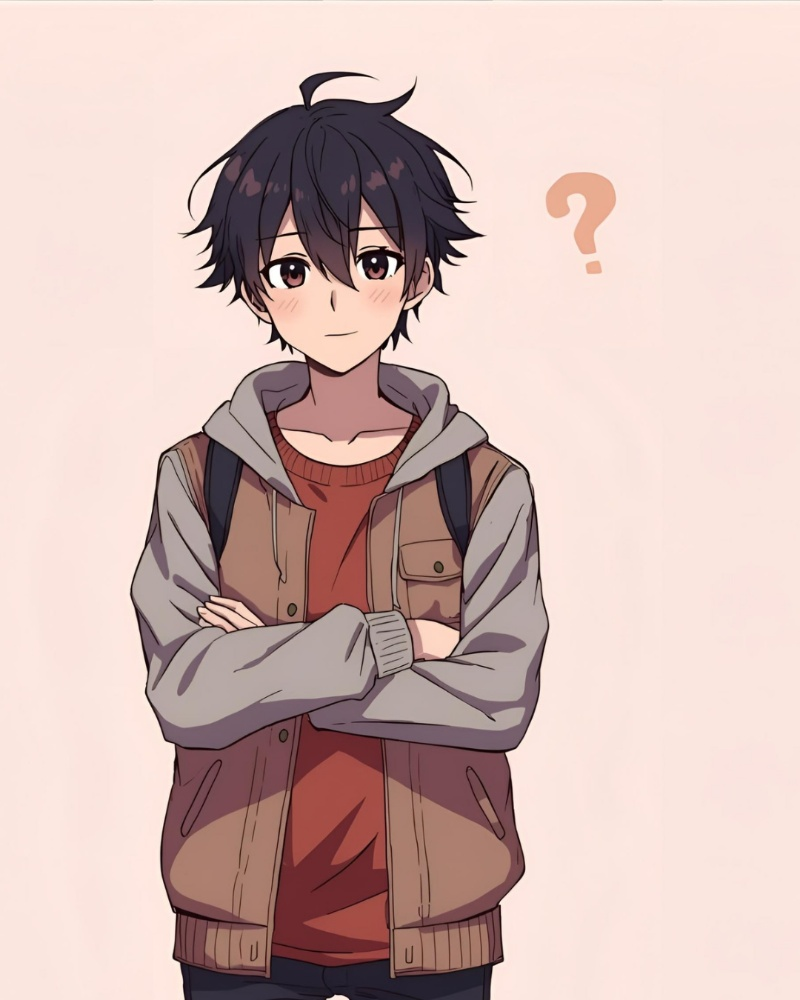

               
            
            โจ
                ๐
                ๐ซ
                โญ
                ๐ฎ
                ๐
                ๐
                ๐ฏ
           
                 
               
        Clique no garoto para aprender!
                
   